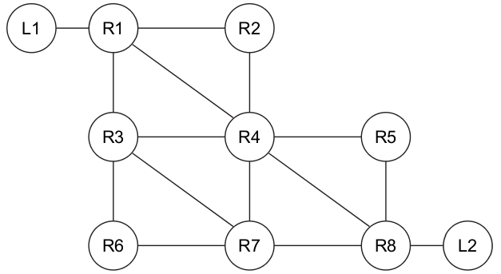
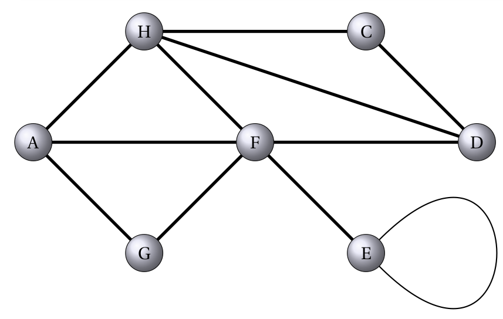
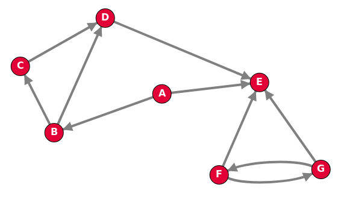
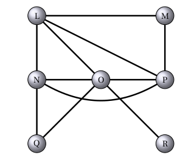
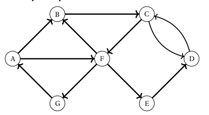
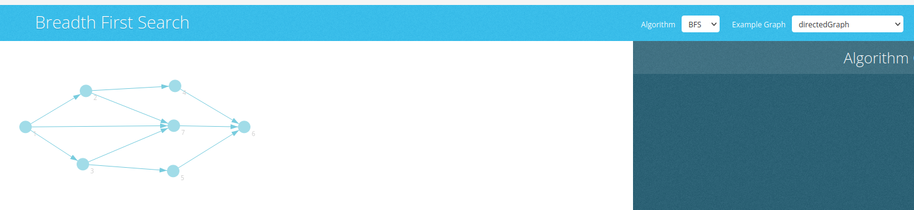

import numpy as np
a = np.arange(15).reshape(3, 5)
aarray([[ 0, 1, 2, 3, 4],
[ 5, 6, 7, 8, 9],
[10, 11, 12, 13, 14]])import numpy as np
a = np.arange(15).reshape(3, 5)
aarray([[ 0, 1, 2, 3, 4],
[ 5, 6, 7, 8, 9],
[10, 11, 12, 13, 14]])??? tip “Problème des 7 ponts de Königsberg” Le problème des sept ponts de Königsberg est connu pour être à l’origine de la topologie et de la théorie des graphes. Résolu par Leonhard Euler en 17351, ce problème mathématique se présente de la façon suivante :
 ->  -> 
La ville de Königsberg (aujourd'hui Kaliningrad) est construite autour de deux îles situées sur le Pregel et reliées entre elles par un pont. Six autres ponts relient les rives de la rivière à l'une ou l'autre des deux îles, comme représentés sur le plan ci-dessus. Le problème consiste à déterminer s'il existe ou non une promenade dans les rues de Königsberg permettant, à partir d'un point de départ au choix, de passer une et une seule fois par chaque pont, et de revenir à son point de départ, étant entendu qu'on ne peut traverser le Pregel qu'en passant sur les ponts.
Source wikipédiaInitiée par le grand mathématicien suisse Euler, avec le célèbre problème des 7 ponts de Königsberg, les applications de la théorie des graphes et de la recherche opérationnelle sont aujourd’hui immenses tant au plan civil que militaire :
La théorie des graphes n’est pas une branche indépendante des mathématiques, elle se rattache à la programmation linéaire, la programmation convexe (où le concept plus général de fonction convexe remplace les fonctions linéaires et affines), le calcul des probabilités.
Les graphes sont une structure de données très riche permettant de modéliser des situations variées de relations entre un ensemble d’entités.
Le concept de graphe permet de résoudre de nombreux problèmes en mathématiques comme en informatique. C’est un outil de représentation très courant, et nous l’avons déjà rencontré à plusieurs reprises, en particulier lors de l’étude de réseaux.
!!! note “Exemples de situations” === “Réseau informatique” {: .center width=640}
=== "Réseau de transport"
{: .center width=640}
=== "Réseau social"
{: .center width=640}
=== "Mais aussi"
On trouve également des applications de la théorie des graphes dans bien d'autres domaines: ...!!! jeretiens “Ce qu’il faut retenir” D’un point de vue mathématique, un graphe est la donnée
- d’un certain nombre de points du plan, appelés **_sommets_** ,
- certains étant reliés par des segments de droites ou de courbes (simples) appelés **_arêtes_** ,
- la disposition des sommets et la forme choisie pour les arêtes n’intervenant pas.
- Le nombre de sommets du graphe est son **_ordre_**. Sauf indication contraire, un graphe sera considéré comme non orienté et les arêtes pourront être parcourues dans les deux sens.
 {:.center width=480}
{:.center width=480}
!!! jeretiens “Ce qu’il faut retenir” Dans le cas des graphes non orientés, les relations entre deux sommets se font dans les deux sens. On appelle ses relations des arêtes (edges en anglais), et on a les définitions suivantes :
- **_Sommets adjacents_** : deux sommets sont adjacents s’ils sont reliés entre eux par une arête.
On dit que l’arête est incidente aux deux sommets.
- **_Voisins d’un sommet x_** : ce sont tous les sommets reliés à x par une arête.
- **_Degré d’un sommet x_** : nombre d’arêtes incidentes au sommet, on le note d (x).
- **_Chaîne_** : séquence ordonnée d’arêtes telle que chaque arête a une extrémité en commun avec l’arête suivante.
- **_Cycle_** : dans un graphe non orienté, un cycle est une suite d’arêtes consécutives (chaîne) dont les deux sommets extrémités sont identiques.
- **_Boucle_** : il peut exister des arêtes entre un sommet x et lui-même. Elles sont appelés boucles. {:.center width=450px}
!!! exo “Exercice 1” - Citer des sommets adjacents.
- Donner le degré de chacun des sommets.
- Citer une chaîne.
- Donner un cycle.
- Y-t-il une boucle ?
{: .center width=480}
Dans un graphe orienté, les arcs ne peuvent être empruntés que dans le sens de la flèche, et un chemin est une suite de sommets reliés par des arcs, comme B → C → D → E par exemple.
Les sommets C et D sont adjacents au sommet B (mais pas A !), ce sont les voisins de B.
!!! jeretiens “Ce qu’il faut retenir” Dans le cas des graphes orientés, les arêtes ont un sens et elles sont appelées arcs. Par exemple,
l’arête a = (x, y) indique qu’il y a un arc d’origine x et d’extrémité finale y. De plus, on a les définitions suivantes.
- **_Successeurs et prédécesseurs d’un sommet x_** : dans un graphe orienté on ne parle plus de voisins d’un sommet mais de ses successeurs et de ses prédécesseurs : le successeurs de x sont tous les sommets y tels qu’il existe un arc (x, y) (de x vers y) et les prédécesseurs de x sont tous les sommets w tels qu’il existe un arc (w, x) (de w vers x).
- **_Chemin_** : séquence ordonnée d’arcs consécutifs (on parlait de chaîne dans un graphe non orienté).
- **_Circuit_** : dans un graphe orienté, un circuit est une suite d’arcs consécutifs (chemin) dont les deux sommets extrémités sont identiques.
- **_Degré d’un sommet x_** : cette notion existe aussi dans le cas des graphes orientés. On distingue le degré entrant d’un sommet x (noté $d_-(x)$= nombre de prédécesseurs de x) et le degré sortant d’un sommet x (noté $d_+(x)$= nombre de successeurs de x ). Le degré d’un sommet x vaut $d (x) = d_+(x) + d_-(x)$.
• **_Boucle_** : ce sont les arcs entre un sommet et lui-même. {: .center width=480}
{: .center width=480}
Par exemple:
Au premier trimestre 2020, Facebook© revendiquait 2,6 milliards d’utilisateurs actifs chaque mois, en hausse de 9,2% par rapport à début 2019. Le réseau social américain a passé la barre symbolique des 2 milliards au deuxième trimestre 2017. A noter que 42% des utilisateurs actifs mensuels de Facebook viennent d’Asie-Pacifique, 15,6% sont Européens et 9,7% sont Nord-américains. Facebook permet à ses utilisateurs d’entrer des informations personnelles et d’interagir avec d’autres utilisateurs. Les interactions entre utilisateurs reposent sur la notion « d’amis ».
Imaginez un réseau social ayant 7 abonnés (L, M, N, O, P, Q et R) où :
L est ami avec M, N, O et P ;
M est ami avec L et P ;
N est ami avec L, O et P ;
O est ami avec L,N,P,Q et R ;
P est ami avec O,L et M ;
Q est ami avec N et O ;
R est ami avec O.
La description de ce réseau social, malgré son faible nombre d’abonnés, est déjà quelque peu compliquée, alors imaginez cette même description avec un réseau social comportant des millions d’entre eux !
Il existe un moyen plus “visuel” pour représenter ce réseau social :
on peut représenter chaque abonné par un cercle (avec le nom de l’abonné situé dans le cercle) et chaque relation “X est ami avec Y” par un segment de droite reliant X et Y (“X est ami avec Y” et “Y est ami avec X” étant représenté par le même segment de droite). Le mini-réseau social décrit précédemment peut être modélisé sous la forme du graphe ci-dessous :

{{ titre_activite(“Implémentation avec matrice d’adjacence”,[],0) }}
Principe de l’implémentation
On prend l’exemple du graphe orienté suivant :
{:.center}
| A | B | C | D | E | F | |
|---|---|---|---|---|---|---|
| A | 0 | 1 | 0 | 0 | 0 | 1 |
| B | ||||||
| C | ||||||
| D | ||||||
| E | ||||||
| F |
!!! note Si on numérote les sommets du graphe (A le numéro 1, B le numéro 2, …), il n’est plus nécessaire d’indiquer les noms des sommets sur les lignes et les colonnes.
En nommant les sommets A, B, C, D et E dessiner le graphe dont la matrice d’adjacence est :
\[\begin{pmatrix} 0 & 1 & 1 & 1 & 0 \\ 0 & 0 & 1 & 0 & 1\\ 0 & 0 & 0 & 0 & 0\\ 1 & 1 & 1 & 0 & 0\\ 0 & 0 & 0 & 1 & 0\\ \end{pmatrix}\]Que peut-on dire d’un graphe dont la matrice d’adjacence est symétrique par rapport à sa diagonale principale ?
Proposer une méthode pour représenter un graphe pondéré par une matrice d’adjacence.
Implémentation en python
On s’inspire de ce qui a été fait pour les arbres et on utilisera la {{sc(“poo”)}} pour représenter un graphe par sa matrice d’adjacence. Enfin, on suppose qu’on implémente des graphes orientés.
taille au graphe. Compléter le code ci-dessous :class Graphe:
def __init__(self,sommets):
self.sommets=sommets
self.taille = len(......)
self.matrice = ............. #construction par compréhension avec que des 0Poursuivre cette implémentation en ajoutant une méthode d’ajout d’une arête.
!!! aide * Cette méthode prend en paramètre l’origine et l’extrémité de l’arête à ajouter. * On pourra vérifier que l’origine et l’extrémité sont bien dans la liste de sommets et rechercher leur position grâce à la méthode index des listes de python.
Ajouter une méthode de suppression d’une arête
Ajouter une méthode d’affichage de la matrice d’adjacence
Ecrire la méthode voisins qui prend en paramètre un sommet et renvoie la liste de ses voisins.
{{ titre_activite(“Implémentation avec des listes d’adjacences”,[]) }}
Principe de l’implémentation
On reprend l’exemple du graphe orienté déjà utilisé à l’activité précédente
{:.center}
A : B,FB : ...C : .... : .... : .... : ...R : SS : R,T,U,VT : VU : NoneV : R,UImplémentation en Python
On donne ci-dessous le constructeur d’une classe Graphe qui implémente les graphes sous la forme de listes d’adjacence :
class Graphe:
def __init__(self,sommets):
self.taille = len(sommets)
self.listes = {}
for s in sommets:
self.listes[s]=[]Quel est le type de l’attribut listes d’un objet de la classe Graphe ?
On suppose qu’on crée un objet de la classe Graphe en donnant en paramètre la liste ["A","B","C","D"]. Quel est alors le contenu de l’attribut listes de cet objet ?
Poursuivre cette implémentation en ajoutant une méthode d’ajout d’une arête.
Ajouter une méthode de suppression d’une arête
Proposer une méthode permettant d’ajouter un sommet.
Proposer une méthode permettant de supprimer un sommet.
Ecrire la méthode voisins qui prend en paramètre un sommet et renvoie la liste de ses voisins.
{{ titre_activite(“Parcours d’un graphe”,[]) }}
Visualisation d’un parcours depth first search
Un outil en ligne, permet de visualiser le résultat du parcours en profondeur d’un graphe. Un graphe est donné en exemple, mais vous pouvez le modifier ou construire le votre. {: width=600px .imgcentre}
!!! attention Dans les menus déroulants, bien choisir Alorithme : DFS et Example graph : directedGraph
Visualisation d’un parcours breadth first search
Ce même outil en ligne, permet de visualiser le résultat du parcours en largeur d’un graphe. Un graphe est donné en exemple, mais vous pouvez le modifier ou construire le votre : {: width=600px .imgcentre}
!!! attention Dans les menus déroulants, bien choisir Alorithme : BFS et Example graph : directedGraph
On considère le graphe suivant :
mermaid graph LR A(("A")) B(("B")) C(("C")) D(("D")) E(("E")) F(("F")) G(("G")) A --> B A --> C B --> D C --> F C --> G E --> G A --> E D --> F G --> F B --> C
Prévoir l’ordre de parcours pour un parcours en profondeur en commençant par le sommet A. Vérifier en testant dans l’outil en ligne.
Même question pour un parcours en largeur.
{{ exo(“Vocabulaire sur les graphes”,[],0) }}
On considère le graphe suivant :graph LR
A(("A"))
B(("B"))
C(("C"))
D(("D"))
E(("E"))
F(("F"))
G(("G"))
H(("H"))
A --- B
A --- C
C --- F
C --- G
E --- G
G --- F
B --- E
C --- H
B --- D
D --- C</div>C.G ?A ?{{ exo(“Graphe complet”,[]) }}
Rappeler la définition d’un graphe complet
Dessiner un graphe complet à cinq noeuds.
Combien d’arêtes possède ce graphe ?
Donner la matrice d’adjacence de ce graphe.
Quel est le nombre d’arêtes d’un graphe complet à \(n\) noeuds ?
!!! aide On pourra utiliser sans avoir à le prouver que : $ 1 + 2 + + n = $
{{ exo(“Représentation par matrice d’adjacence”,[]) }}
Donner la matrice d’adjacence du graphe suivant :
mermaid graph LR A(("A")) B(("B")) C(("C")) D(("D")) E(("E")) A --- B A --- C C --- E D --- E B --- C C --- D
Dessiner le graphe dont la matrice d’adjacence est :
\[\begin{pmatrix} 0 & 1 & 1 & 0 & 0 \\ 0 & 0 & 1 & 0 & 1 \\ 1 & 1 & 0 & 0 & 0 \\ 0 & 1 & 1 & 0 & 0 \\ 0 & 1 & 1 & 0 & 0 \\ \end{pmatrix}\]{{ exo(“Représentation par listes d’adjacence”,[]) }}
Donner la représentation sous forme de listes d’adjacences du graphe suivant :
mermaid graph LR A(("A")) B(("B")) C(("C")) D(("D")) E(("E")) A --- B A --- C C --- E D --- E B --- C C --- D
Dessiner le graphe dont la représentation sous forme de listes d’adjacence est :
{{ exo(“Parcours d’un graphe”,[]) }}
On considère le graphe suivant :```mermaid
graph LR
A(("A"))
B(("B"))
C(("C"))
D(("D"))
E(("E"))
F(("F"))
G(("G"))
A --> B
A --> C
G --> E
C --> D
D --> F
B --> E
E --> F
A --> G
```
</div>{{ exo(“Implémentation par matrice d’adjacence”,[]) }}
Récupérer, et revoir l’implémentation des graphes réalisée précédement :
{{ telecharger(“Implémentation graphes par matrice”,“../files/C22/graphes_matrice.py”)}}
Utiliser cette implémentation pour créer le graphe de sommets A,B,C,D,E et dont la matrice d’adjacence est :
Ajouter la méthode parcours_largeur ci-dessous à cette implémentation en la complétant.
def parcours_largeur(self,depart):
assert depart in self.sommets
a_traiter = [depart]
deja_vu = [depart]
pl = []
while a_traiter != []:
sommet = a_traiter[0]
voisins = self.get_voisin(sommet)
# Ajout des sommets voisins non encore parcourus à ceux à traiter
for v in .......:
if v not in .....:
a_traiter......(v)
deja_vu.......(v)
pl.append(sommet)
a_traiter.....(0)
return plReconnaître la structure de données utilisée pour la variable a_traiter, expliquer pourquoi le choix d’une liste n’est pas judicieux.
Ajouter la méthode parcours_profondeur ci-dessous à cette implémentation en la complétant.
def parcours_profondeur(self,start,parcourus=None):
if parcourus == None:
parcourus = []
parcourus.append(start)
for v in self...........(start):
if v not in parcourus:
self............(v,parcourus)
return parcourusProposer une méthode permettant d’ajouter un sommet.
Proposer une méthode permettant de supprimer un sommet.
{{ exo(“Implémentation par listes d’adjacence”,[]) }}
Reprendre les questions de l’exercice précédent avec l’implémentation par liste d’adjacence :
{{ telecharger(“Implémentation graphes par listes”,“../files/C22/graphes_liste.py”)}}